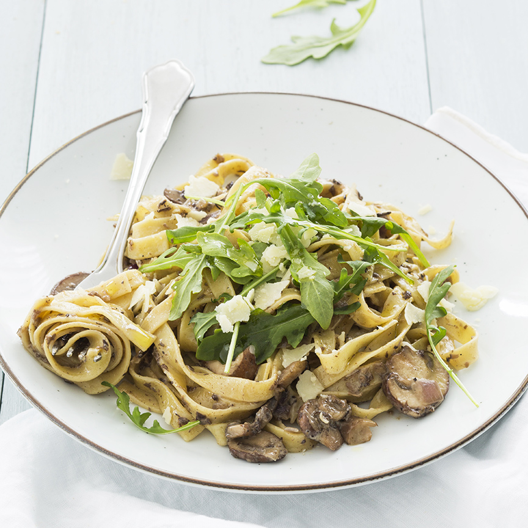

Pasta met truffelroomsaus
Dit pasta recept met champignons en truffel is echt genieten en super makkelijk te maken!
Ingrediënten
- 160 gram tagliatelle pasta
- 250 gram kastanje champignons
- 75 gram truffeltapenade
- 1 ui
- Handje rucola
- 100 ml room
- 2 eetlepels parmezaanse kaas
- Scheutje olijfolie met truffel aroma
Bereidingswijze
- Kook de pasta gaar in een pan met water.
- Verhit een beetje boter of olie in een pan en voeg daar de champignons en gesnipperde ui aan toe.
- Bak dit 5 minuten. Voeg dan de truffeltapenade toe.
- Giet de room er bij en roer tot een romig geheel.
- Breng op smaak met een snufje peper en zout. Roer dan de pasta er door.
- Serveer de truffel pasta met een handje rucola en wat Parmezaanse kaas. Besprenkel eventueel nog met een beetje olie met truffelaroma.

Tip: Erg lekker met een wit wijntje erbij.